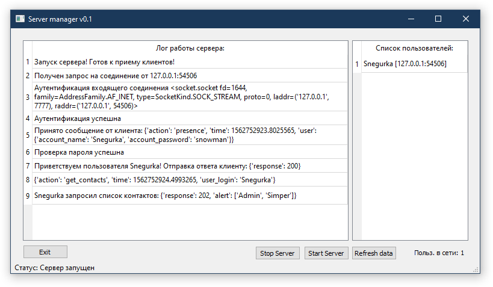

Server module¶
Серверный модуль мессенджера. Обрабатывает словари - сообщения, хранит хешированные пароли клиентов и их список контактов.
Использование
Модуль подерживает аргементы командной стороки:
-p - Порт на котором принимаются соединения
-a - Адрес с которого принимаются соединения.
Примеры использования:
python server.py -p 7777
Запуск сервера на порту 7777
python server.py -a localhost
Запуск сервера принимающего только соединения с localhost
server.py¶
Запускаемый модуль,содержит парсер аргументов командной строки и функционал серверного приложения.
-
class
server.Server(serv_addr='0.0.0.0', serv_port=7777)¶ Главный класс сервера, обработка подключений пользователей
-
check_correct_presence_and_response(presence_message)¶ Функция проверки корректности приветственного сообщения (PRESENCE) и формирования ответа
-
client_auth(client, secret_key)¶ Аутентификация клиента.
-
read_messages(from_clients, client_list)¶ Процедура чтения сообщений с сокетов клиентов
-
start_server()¶ Процедура запуска сервера
-
write_messages(messages, to_clients, client_list)¶ Процедура записи сообщений в сокеты клиентов
-
-
class
server.ServerManager¶ Класс работы с GUI сервера
-
add_log(log_text)¶ Процедура добавления информации в список логирования на главный экран
-
closeapp()¶ Процедура выхода из приложения
-
gui_add_log_item(log_text)¶ Процедура формирования элемента списка логирования
-
initUI()¶ Процедура инициализации GUI главного окна сервера
-
refresh_user_list()¶ Процедура обновления информации о списке пользователей в интерфейсе сервера
-
startserver()¶ Процедура запуска основного кода сервера из GUI
-
stopserver()¶ Процедура остановки основного кода сервера из GUI
-
-
class
server.ServerSocket(p_addr='0.0.0.0', p_port=7777)¶ Класс для создания серверного сокета
server_database.py¶
-
class
server_database.User(login, password, realname='', about_self='')¶ Класс описывающий таблицу пользователей. Содержит id пользователя, логин, хешированный пароль, настоящее имя, инфо о себе, даты действия записи и дату создания.
-
class
server_database.User_sessions(login, ip)¶ Класс описывающий таблицу с историей входов пользователей. Содержит id сессии, логин, ip адрес и дату сессии.
-
class
server_database.Users_online(login, ip)¶ Класс описывающий таблицу с информацией о подключенных в настоящий момент пользователях. Содержит логин, ip адрес и дату подключения.
-
class
server_database.User_contact_list(owner_login, in_list_login, group='General')¶ Класс описывающий таблицу списка контактов пользователя на сервере. Содержит владельца списка, контакт и группу.